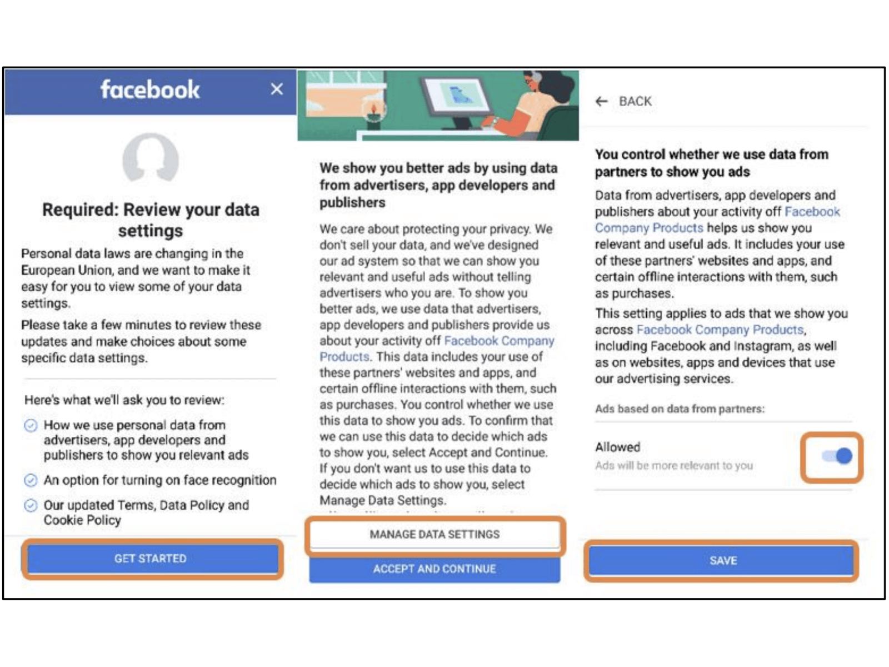

Obstruction
- Obstruction refers to a manipulative pattern that, once used, results in consequences similar to this: The user is faced with barriers or hurdles, making it hard for them to complete their task or access information.
- In real-world, accepting unessential cookies like marketing cookies means you're giving the green light for websites to track your online behavior. It's like opening the door for them to follow your digital footsteps, showing you ads tailored to your interests.
Real-world example #1:
Facebook used an Obstruction technique by making it easy to agree to privacy-invading settings but difficult to reject them. Facebook's interface had a button to “accept and continue” with just one click, but to reject the settings, the user had to click an unclear button and toggle a switch to the left. This made it confusing for users, and they couldn't be sure if they successfully protected their privacy. Real-world example #2:
iOS 6 hides the option to disable ad tracking in an irrelevant location and uses trick wording (double negative) to confuse the user.